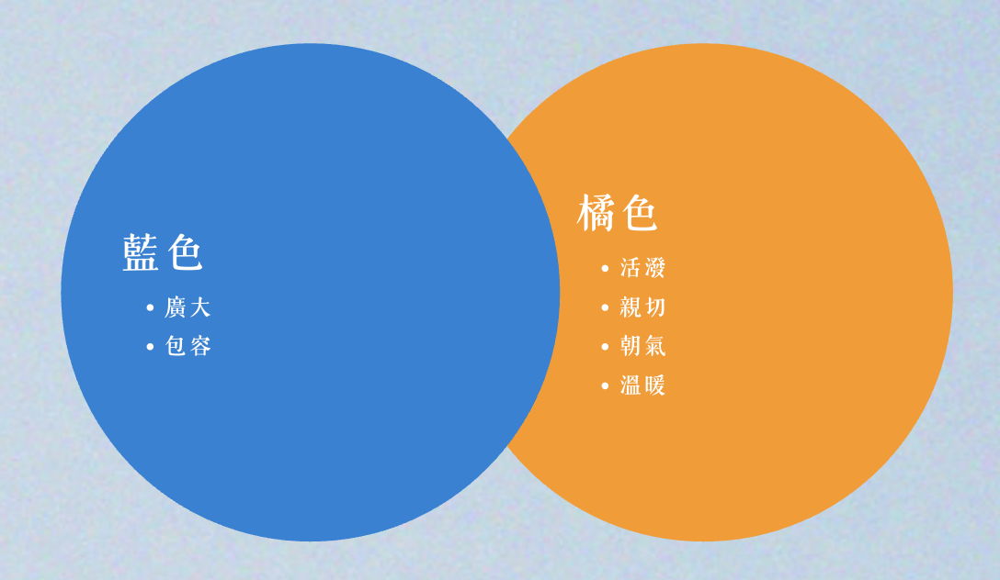
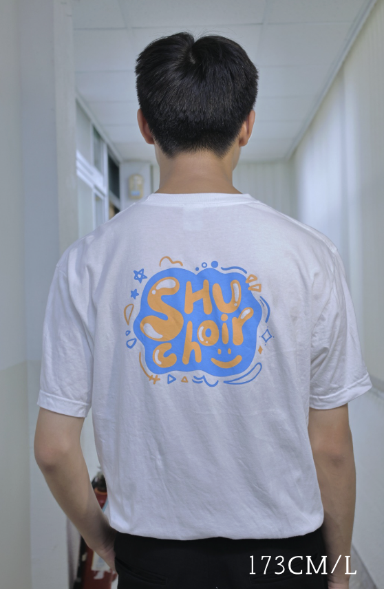
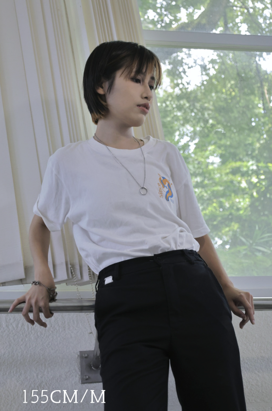
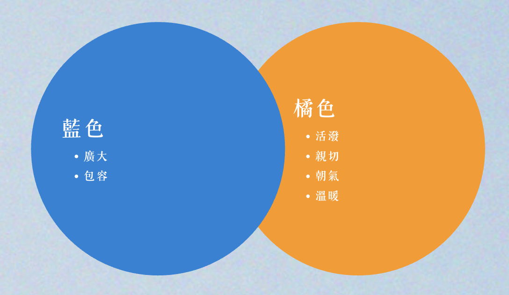
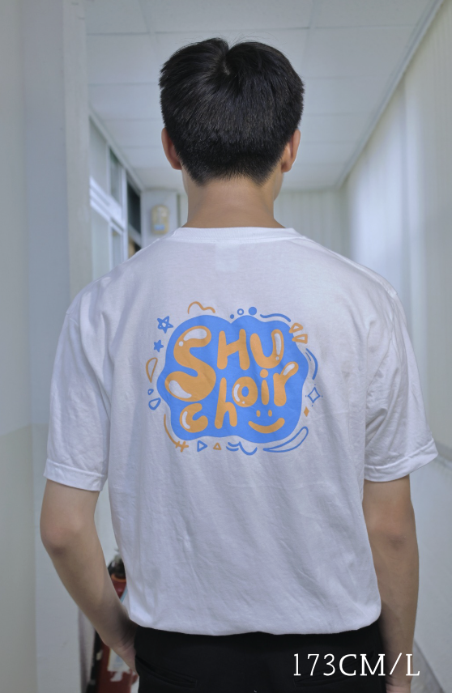
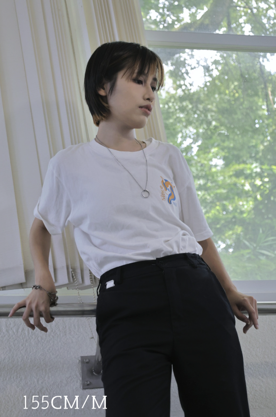

世新合唱團始於民國 54 年，致力於推廣合唱藝術。我們相信，音樂的力量能夠跨越語言的界限，感動每一個聽眾。
無論您是經驗豐富的聲樂愛好者，還是初次接觸合唱的新手，都歡迎加入我們，一同探索聲音的無限可能。
深入了解我們世新合唱團始於民國 54 年，致力於推廣合唱藝術。我們相信，音樂的力量能夠跨越語言的界限，感動每一個聽眾。
無論您是經驗豐富的聲樂愛好者，還是初次接觸合唱的新手，都歡迎加入我們，一同探索聲音的無限可能。
深入了解我們世新大學合唱團（Shih Hsin University Chorus，SHUC），簡稱世新合唱團，是世新大學學生社團之一，創立於民國 54 年 3 月 22 日。
宗旨： 以提高學生素質、倡導音樂風氣、陶冶身心、提升氣質及聯絡團員感情。
信條：： 「責任、榮譽、服從」、「犧牲最大犧牲，享受最低享受」。
本團由首任團長兼指揮—謝建治所創辦，最初稱為「音樂協會」，後來正式改名為「世新合唱團」，並於民國 83 年（1994 年）登記為業餘演藝團體。
合唱團每年的活動種類繁多，例如幹部訓練成長營、招生試音、期末公演、年度公演等。每學期末在校內舉辦期末音樂會，且於每個年度 7 月前後舉辦年度售票音樂會。
團員習慣以「馬兒」相稱，並以資歷深淺分為「老馬」與「小馬」。此稱謂來自李抱忱的話語：「我就像隻老馬，帶著你們這群小馬奔馳在音樂的大草原上。」意指團內每一員在音樂和生活上努力做好自己，亦盡力照顧每一位新團員。
國立臺灣師範大學音樂學博士，美國克里夫蘭州立大學 (CLEVELAND STATE UNIVERSITY) 音樂碩士。現為輔仁大學、東華大學音樂系兼任助理教授，教授音樂學、西洋音樂史相關課程。
除教職外，更身兼多個廣播節目主持人，並受邀擔任客席指揮及音樂比賽評審。
世新合唱團，一個溫暖如家的所在。我們有許多大大小小的活動，如招生試音、野餐音樂會、重唱大賽、期末公演、寒訓、再招生、團慶、送舊校內公演以及年度公演等等。
五十九屆的世新合唱團度過了許多難忘的時光。如果您還想看更多的資訊，請點擊下方按鈕，我們將向您介紹五十九屆的各式點點滴滴。
回顧五九世新合唱團的團刊稱為「樂聲之家」，迄今已發行超過八百期！
刊物內容豐富，紀錄了歷屆幹部、新進團員的介紹，以及各個活動的文字與影像內容，詳實地記錄了世新合唱團的點點滴滴。
點擊下方卡片即可前往 PUBU 電子書平台收看該期團刊！
世新大學合唱團已經走過整整六十年，這是一段充滿汗水、淚水和無數動人樂章的歲月。今年，我們希望藉著擴大舉辦團慶，將這份歷史與榮耀分享給每一位曾經參與、支持我們的朋友。
無論您是離開母校已久的團友，還是與我們一起走過這段旅程的親朋好友，您的支持不僅僅是財務上的幫助，更是一份情感的連結。
每一份心意，都是我們勇敢向前的力量，讓我們能夠繼續歌頌青春與夢想，並將這份熱情傳遞給下一代。您的捐助，將會成為我們團體成長、發行紀念品及傳承音樂精神的重要支柱。
如果您有意願參與募資計畫，請點擊下方表單。匯款資訊及聯絡人相關資訊皆在表單說明欄，感謝您的支持！
前往募資表單 (Google Form)本年度團便服款式及訂購資訊。請注意截止日期！
正面的小馬以「獨角獸」為出發點作為設計主體，象徵著純真、正直以及獨特，這是對合唱團的想法與期許；背面則是選用 SHU choir 的字樣並搭配躍動感強的花邊，凸顯世新合唱團朝氣蓬勃的一面。
售價： 250元/件
顏色： 午夜藍 / 材質： 100% 精梳棉
尺寸指南： 160 / S / M / L / XL / XXL (請參考下方尺寸表圖示)
訂購截止日：2025/12/31
前往訂購表單

 




